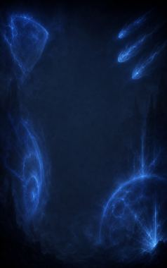
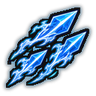
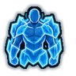
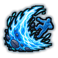
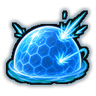
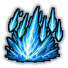
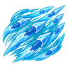

Technique trees › Universal ninjutsu
Shape Transformation (Force)
10 techniques in the Ninjutsu tab.
Unlocks through World of Naruto's own trees, a gene, a build choice or a profession.

Chakra Missile D
Chakra 8. Three darts of solid force that never miss their mark.
Chakra Missile D
Chakra 8. Three darts of solid force that never miss their mark.
Three darts of solid force that never miss their mark.
| Rank | Chakra | Cooldown | Class level |
|---|---|---|---|
| D | 8 | 10 s | 2 |

Chakra Armour D
Chakra 8. A shell of solid force over the body for an hour.
Chakra Armour D
Chakra 8. A shell of solid force over the body for an hour.
A shell of solid force over the body for an hour.
| Rank | Chakra | Cooldown | Class level |
|---|---|---|---|
| D | 8 | 10 s | 3 |
Push D
Chakra 8. A shove of force knocks one enemy back.
Push D
Chakra 8. A shove of force knocks one enemy back.
A shove of force knocks one enemy back.
| Rank | Chakra | Cooldown | Class level |
|---|---|---|---|
| D | 8 | 10 s | 4 |
Evoked Bludgeon C
Chakra 14. Form a club of pure force in the hand for a fight.
Evoked Bludgeon C
Chakra 14. Form a club of pure force in the hand for a fight.
Form a club of pure force in the hand for a fight.
| Rank | Chakra | Cooldown | Class level |
|---|---|---|---|
| C | 14 | 15 s | 5 |

Forcewave C
Chakra 14. A wave of force hits one enemy hard.
Forcewave C
Chakra 14. A wave of force hits one enemy hard.
A wave of force hits one enemy hard.
| Rank | Chakra | Cooldown | Class level |
|---|---|---|---|
| C | 14 | 15 s | 6 |

Shield of Force C
Chakra 14. A dome of force stops enemy shots for twenty seconds.
Shield of Force C
Chakra 14. A dome of force stops enemy shots for twenty seconds.
A dome of force stops enemy shots for twenty seconds.
| Rank | Chakra | Cooldown | Class level |
|---|---|---|---|
| C | 14 | 15 s | 7 |
Razor Disk B
Chakra 24. A spinning disk of force that cuts deep.
Razor Disk B
Chakra 24. A spinning disk of force that cuts deep.
A spinning disk of force that cuts deep.
| Rank | Chakra | Cooldown | Class level |
|---|---|---|---|
| B | 24 | 25 s | 9 |
Pushing Shockwave B
Chakra 24. A shockwave from the user throws everyone close back.
Pushing Shockwave B
Chakra 24. A shockwave from the user throws everyone close back.
A shockwave from the user throws everyone close back.
| Rank | Chakra | Cooldown | Class level |
|---|---|---|---|
| B | 24 | 25 s | 11 |

Starfall A
Chakra 40. Bolts of force rain down on an area for eight seconds.
Starfall A
Chakra 40. Bolts of force rain down on an area for eight seconds.
Bolts of force rain down on an area for eight seconds.
| Rank | Chakra | Cooldown | Class level |
|---|---|---|---|
| A | 40 | 1.2 hours | 14 |

Missile Storm S
Chakra 80. S-rank. A storm of chakra missiles fills a cone in front of the user.
Missile Storm S
Chakra 80. S-rank. A storm of chakra missiles fills a cone in front of the user.
S-rank. A storm of chakra missiles fills a cone in front of the user.
| Rank | Chakra | Cooldown | Class level |
|---|---|---|---|
| S | 80 | 6 hours | 18 |
Chakra is the technique's base cost, the number in its def. In play it is multiplied by the pawn's chakra energy usage multiplier, which traits (chakra artificer 90%, volatile conduit 110%), World of Naruto genes and jutsu enhancements change, so the technique window can show a slightly different number for each ninja. Cooldowns are in-game time, as the technique window shows them, and the pawn's cooldown stat shortens or lengthens them. World of Naruto gives every ninja a base of 100 maximum chakra; genes and traits change it.